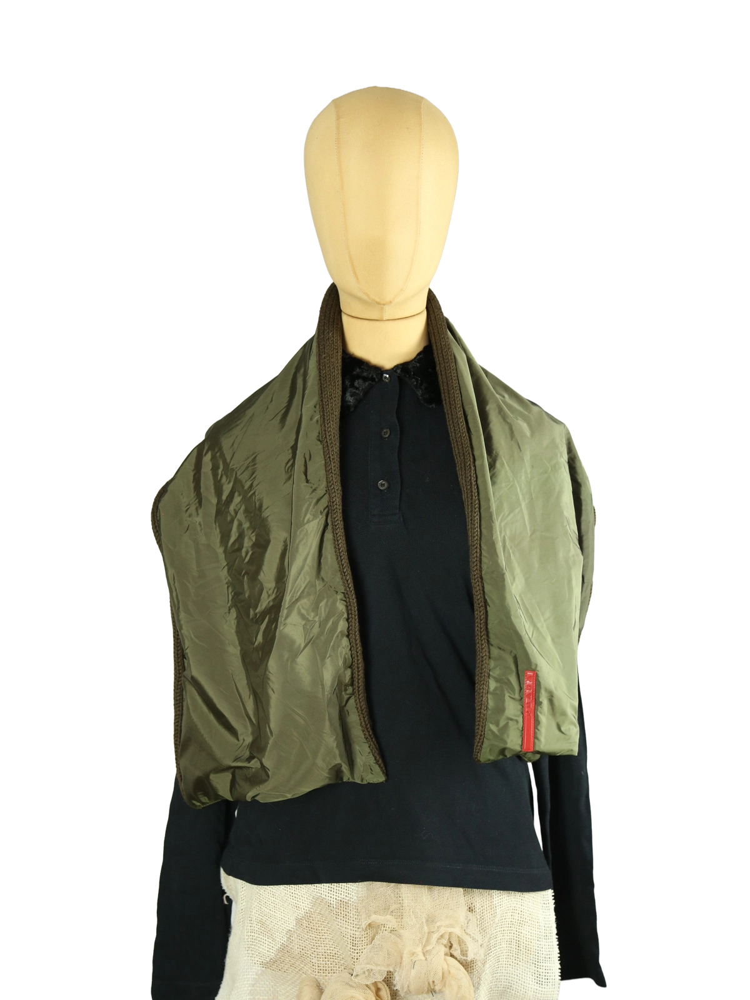

1 / 10Aus dem kuratierten Archiv von Disorder119. Dieses Prada Accessoire bewegt sich bewusst zwischen Schal und ärmellosem Overlay. Die Konstruktion kombiniert eine gesteppte, olivgrüne Nylonfläche mit einem grob gestrickten Wollbereich, wodurch ein funktionaler wie gestalterischer Kontrast entsteht. Der Schnitt ist offen, weich fallend und modular tragbar – als wärmender Schal, als Layer über Shirts oder als konzeptuelles Styling-Element. Die charakteristische rote Prada-Tab-Applikation setzt einen klaren Markenakzent, während Materialwahl und Verarbeitung eine technisch-urbane Handschrift tragen. Ein typisches Beispiel für Pradas utilitaristischen Ansatz mit modischem Anspruch. Details: Marke: Prada Farbe: Grün Größe: One Size Passform: Locker fallend Verschluss: Offen Material: Wolle und Nylon Herstellungsland: Italien Fotografie & Passform: Das Kleidungsstück wurde auf unserer Standard-Schneiderpuppe fotografiert, die wir zur konsistenten Darstellung aller Kleidungsstücke verwenden. Maße der Schneiderpuppe: Brustumfang 89 cm Taillenumfang 66 cm Hüftumfang 89 cm Schulterbreite 38 cm Diese Maße dienen ausschließlich der visuellen Einordnung und werden nicht als Artikelmaße bezeichnet. Zustand: Guter gebrauchter Zustand mit leichten Gebrauchsspuren und materialtypischer Patina. Rechtliche Hinweise: Verkauf als gebrauchtes Kleidungsstück. Die Beschreibung erfolgt nach bestem Wissen und Gewissen. Farbnuancen und Oberflächenwirkungen können aufgrund von Lichtverhältnissen bei der Fotografie sowie unterschiedlicher Bildschirmdarstellungen leicht vom Original abweichen. Disorder119 steht für sorgfältig kuratierte Designerstücke mit Fokus auf Authentizität, Qualität und zeitlose Relevanz.
Disorder119 · Kuratiertes Archiv für Designer-, Vintage- und Contemporary-Mode. Jedes Stück wird einzeln ausgewählt, fotografiert und beschrieben.